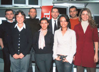
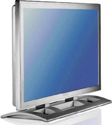
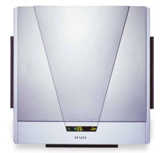

|
ODTÜ'lü,
ÝTÜ'lü çocuklar yýlda 150 model geliþtiriyorlar
Ýzmir'den Manisa'ya doðru yolalýrken, epeyce hayal kurdum.
Dünya markasý olma yolunda hýzla ilerleyen Vestel'i Vestel
yapan tasarýmcýlarý acaba neye ve kime benzerler diye...
Plazma televizyon, Divix oynatabilen DVD, Replay TV ve internet
televizyonu gibi piyasanýn ilklerine imza atan bu ekip, ne
yer, ne içer, nasýl yaþar diye..
Hayalimdeki
görüntü þöyleydi: 25 - 30 yaþ aralýðýnda, belki dövmeli, tel
gözlüklü, marjinal kýyafetleri ve saç biçimleri olan, rock
dinleyen, yarý Ýngilizce yarý Türkçe konuþan bir 'dahi çocuklar'
topluluðu.
Belli ki yabancý dergilerde görüp etkilenmiþim, 'tasarýmcý'
denince, aklýma böyle bir prototip geliyordu.
Ekibin baþýndaki Burak Altýnordu'yla tanýþýnca, ilk
ricam þu oldu: "Lütfen teknoloji lisanýnda röportaj yapmayalým,
bu dili maalesef bilmiyorum."Yanýtý anlamlýydý: "Merak
etmeyin, biz teknolojiyi Türkçe'leþtirdik."
Altýnordu'yla, ekibin her gün 'beyin fýrtýnasý' yaptýðý tasarým
odasýna gittik.
O da ne? Ne uçuk kaçýk, ne marjinal ne de rocker! Her biri
birbirinden 'normal', 25 - 26 yaþlarýnda sekiz genç bizi bekliyor.
Konuþmaya baþlayýnca anladým ki, yeteneklerini 'görünümlerine'
deðil, iþlerine yansýtmýþlar. Prototip deðil, farklý olmayý
seçmiþler.
Burak Altýnordu'nun liderliðinde, Can Uçkan, Ayça
Kýnýk, Þebnem Demirkan, Itýr Þenyüz, Kerem
Tuncel, Cengiz Öztürk'ten oluþan yedi kiþilik ekip,
Vestel'in Plazma TV, DVD, müzik seti, uydu alýcýsý gibi ev
elekroniði ürünlerini tasarlýyor. Tamamý ODTÜ ve ÝTÜ gibi
endüstri tasarýmý konusunda Türkiye'nin en iyi iki üniversitesinden
mezun. Kimi Ýstanbul'dan, kimi Ankara'dan, kimi Antalya'dan
gelip Manisa'daki Vestel City'e yerleþmiþ.
Tasarým
þart!
Vestel'in isimsiz kahramanlarý, yýlda 50'nin üzerinde proje
hazýrlýyor, 150 civarýnda model geliþtiriyorlar.
"Dýþ pazardaki müþteri deðiþti. Eskiden kalýp gelirdi,
fason üretim yapýlýrdý. Þimdi müþteri, hem tasarýmý hem de
üretimi birarada istiyor. Rekabet için tasarým þart"
diyor Burak Altýnordu ve elektronikte bir dünya devi olan
JVC'ye yaptýklarý TV modellerini gösteriyor.
Dünyanýn her ülkesinde farklý tasarýmlar talep ediyor. Ekip,
farklý ülkelerin taleplerini yanýtlamak için önce o ülkenin
kültürüyle ilgili veriler ediniyor.
Örneðin, Almanlar'a geometrik desenli, keskin hatlý ürünler
tasarlanýyor. Ýngilizler sade, Ýtalyanlar yuvarlak hatlarý
seviyor. Hindistan pazarýna ise gösteriþli ürünler tasarlanýyor.
Ýlham
kaynaklarý yaþam
Vestel ekibine, ürünleri nasýl tasarladýklarýný sorduk. "Önce
hayalgücümüzü çalýþtýrýyoruz" dediler. Esin kaynaklarý
yaþam. Sanattaki, modadaki, müzikteki eðilimleri takip ediyorlar.
Gençleri, sokaktaki adamý izliyorlar. Ev kadýnlarýný, çocuklarý
gözlemliyorlar. Dünyadaki teknolojik geliþmelere uygun çözüm
üretiyorlar. Bunun en çarpýcý örneklerinden biri dijital kutu
üretimi. Ýngiltere'nin dijital yayýna geçme kararý almasýnýn
ardýndan baþlayan kutu üretimi. Vestel þimdi Ýngiltere'ye
yýlda 12 milyon adet dijital kutu satýyor.
Kalem
kâðýtla baþlýyor
Sürekli beyin fýrtýnasý yapýyorlar. Sonra alýyorlar ellerine
kalem ve kaðýdý baþlýyorlar çizmeye...
Çizmek kolay bir iþ ama hayatla buluþacak bir ürün çizmek
iþin sýrrý. "Hayalgücünüz sýnýrsýz olabilir ama hayata
geçemeyecek bir þey tasarlarsanýz iyi bir tasarýmcý deðilsinizdir"
diyorlar. Dijital kameralarýn yaygýnlaþmasý yeni bir projeye
ilham kaynaðý olmuþ. Memory kartý TV'ye takarak, resim gösterilebileceði
bir TV üzerinde çalýþýyorlar þimdilerde.
Geleceði
tasarladýlar
Vestel tasarým ekibine, yakýn gelecekte ne tür ürünlerin evlerimizde
yer alacaðýný sorduk ve hayli ilginç yanýtlar aldýk. Bazýlarý
þöyle:
Televizyonda, plazma ve LCD teknolojisi hakimiyeti ele geçirecek,
birkaç yýl içinde tüplü TV'ler tarihe karýþacak.
Buzdolabý, fýrýn, TV, müzik seti gibi tüm elektronik eþyalar
birbiriyle iletiþim içinde olacak.
Melez ürünler gözde olacak. Ekranýna yüklenen bir resimle,
plazma TV kapalý olduðu zamanda duvara asýlý bir tablo hizmeti
verecek.
Kablolar ortadan kalkacak.
En
büyük tatmin
Burak Altýnordu, "Avrupalý olmayýp da Avrupa için ürün
tasarlayýp, satmanýn" kendisine büyük haz verdiðini anlatýyor.
Ekibin diðer üyeleri de onunla hemfikir. Ýþlerinin en keyifli
taraflarýndan biri de TV dizilerinde ya da filmlerde ansýzýn
beliriveren bir Vestel ürününü görünce, heyecanlanýp "Bak,
bunu ben tasarladým" diye övünmek...
Rakamlarla
Vestel
Çalýþan sayýsý: 10,297 kiþi
Satýþlar: 12 milyon TV, 1.8 milyon buzdolabý, 800 bin çamaþýr
makinesi, 350 bin klima, 8,5 milyon dijital cihaz (DVD, DVB)
Ciro: 2,7 milyar dolar
Ýhracat: 2,1 milyar dolar ihracat
2005
ihracat hedefi: 3 milyar dolar
TV ihracatýnýn yüzde 72'si, beyaz eþya ihracatýnýn yüzde 70'i
AB ülkelerine yapýlýyor
Vestel
Quadro, 27-30 Ekim 2005 Tarihlerinde Ýstanbul TÜYAP Beylikdüzü'nde
yapýlan Marketings 2005 Fuarý'nda (www.marketingist.com)
ETMK- Marketingist Özel Sergisi için seçilen ürünlerin arasýnda,
yer aldý. Listede, bu ürünün endüstriyel tasarýmcýsýnýn Ayþegül
Çoktalaþ olduðu belirtilmektedir.
Vestel
Beyaz Eþya'nýn tekli ve çoklu split klima ürün gamý, dünyada
ulaþýlan en son teknoloji ýþýðýnda ýsýtma/soðutma fonksiyonlarýný
bir arada toplayan, elektronik kumandalý, beðeni kazanmýþ
estetik tasarýmlý deðiþik güçlerdeki modelleri kapsamaktadýr.
Türkiye'de ilk negatif iyon jeneratörlü ürünleri pazara sunan
Vestel Beyaz Eþya, anti-alerjik filtreli klimalarý ile yine
bir ilki gerçekleþtirmiþtir. Yeni Quadro serisi, split klima
konseptini yeni bir boyuta taþýmýþtýr;
Bio
trio (anti bakteriyel, anti virüs ve anti alerjik) özellikleri
ile rakiplerinden bir adým öne geçen Quadro serisindeki anti
ajerjik filtreler toz ve polenleri toplayarak steril bir mekan
saðlýyor. Ayrýca Quadro'daki anti bakteriyel ve anti virüs
filtreler de havadaki bakteri ve virüslere geçit vermeyerek
tüketiciye saðlýklý ve konforlu serinlemeyi birarada sunuyor.
Sahip olduðu Ýyonizer teknolojisi ile yaþam alanlarýnda bulunan
negatif yüklü toz zerreciklerini yok ediyor.
Özgün
tasarýmý, renk çeþitleri, robotik iç ünite ön paneli ve sayýsýz
özellikleriyle pazardaki rakiplerinden çok farklý bir yere
oturan Vestel Quadro'lar, pazardaki diðer klimalardan farklý
olarak alttan ve iki yandan üç taraflý hava çýkýþa sahip ve
9.000-12.000 BTU'luk iki farklý dizayna sahip. Slim U ve Slim
V dizaynýnda üretilen Quadro serisi klimalarýn su yeþili,
metalik bej, metalik bordo ve metalik mavi renk alternatifleri
bulunuyor.
Daha
fazla bilgi için:
|